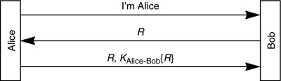
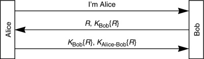

Networking Security Networking Security Networking Security Security Networking Security Networking Security Networking Charlie Kaufman Radia Perlman Mike Speciner Prentice Hall Network Security: Private Communication in a Public World, Second Edition
11.9. Homework
| 1. | Suppose Trudy hijacks a conversation between Alice and Bob. This means that after the initial handshake, Trudy sends messages with source address equal to Alice's source address. Suppose the network allows Trudy to insert a fake source address (Alice's source address), but does not deliver packets destined for Alice's address to Trudy. What are the problems involved in having Trudy transmit a file to Bob as if she were Alice? Consider potential problems with flow control and file transfer protocols when Trudy cannot see return traffic from Bob. | | 2. | In §11.2 Mutual Authentication, we discuss the reflection attack and note that Protocol 11-8 is susceptible, but Protocol 11-7 is not. How about Protocol 11-11? | | 3. | In §11.3.1 Shared Secret we discuss various possibilities for forming a session key. Remember that R is the challenge sent by Bob to Alice, and A is Alice's secret, which Bob also knows. Which of the following are secure for a session key?
A  R R
|
{R+A}A {A}A {R}R+A
|
| 4. | Design a variant of Otway-Rees (page 279) that only has one nonce generated by Alice and one nonce generated by Bob. Explain why it is still as secure. |
| 5. | Suppose we are using a three-message mutual authentication protocol, and Alice initiates contact with Bob. Suppose we wish Bob to be a stateless server, and therefore it is inconvenient to require him to remember the challenge he sent to Alice. Let's modify the exchange so that Alice sends the challenge back to Bob, along with the encrypted challenge. So the protocol is:

Is this protocol secure? |
| |
| 6. | Let's modify the protocol from the previous problem so that Bob sends both a challenge, and a challenge encrypted with a key that only he knows, to Alice:

Is this protocol secure? |
| 7. | In the discussion of Protocol 11-3 on page 261, Bob remembers all the timestamps he's seen within the last 10 minutes. Why is it sufficient for him to remember only 10 minutes worth of timestamps? |
| 8. | Design a two-message authentication protocol, assuming that Alice and Bob know each other's public keys, which accomplishes both mutual authentication and establishment of a session key. |
| 9. | The Expanded Needham-Schroeder Protocol (page 278) can be shortened to a 6-message protocol without loss of security by merely removing the 7th message. Why is this true? (Hint: the purpose of the 7th message is to prove to Bob that he is talking to Alice, but he already knows that. Why?) |
| 10. | §11.4 Mediated Authentication (with KDC) describes several protocols. For each of those protocols, describe which nonces have to be unpredictable (i.e., sequence numbers would not be good). |
| 11. | As we pointed out in §9.1 Password-Based Authentication, cellular phones are vulnerable to a fraud known as "cloning". The protocol cellular phones use is that a phone transmits its telephone number followed by a cleartext password. The phone company checks its database of phone number/password to make sure the phone is legitimate before allowing the call to go through. The phone number is the one billed. Suggest a design based on public key, and one based on secret key, technology. Can you guard against the phone company database being stolen? |
| 12. | There is a product which consists of a fancy telephone that, when talking to a compatible fancy telephone, does a Diffie-Hellman key exchange in order to establish a secret key, and the remainder of the conversation is encrypted. Suppose you are a wiretapper. How can you listen to a conversation between two such telephones? |
| |
| 13. | In §11.1.1 Shared Secret, we discussed using MD5(KAlice-Bob|R) as the method of encrypting R with KAlice-Bob. (When we say KAlice-Bob|R we mean KAlice-Bob concatenated with R.) Suppose instead we used MD5(KAlice-Bob R). Would that be secure? How about MD5(KAlice-BobR)? R). Would that be secure? How about MD5(KAlice-BobR)? |